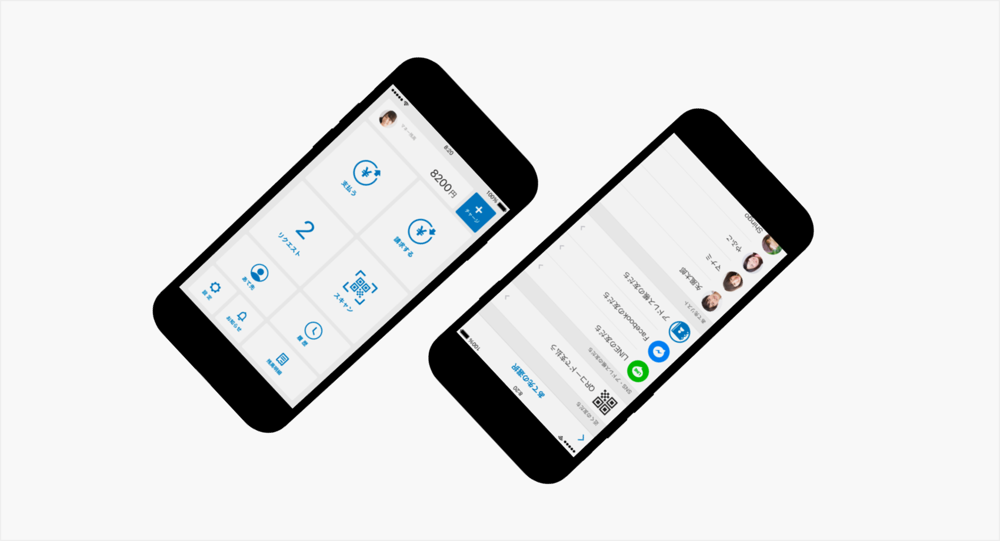
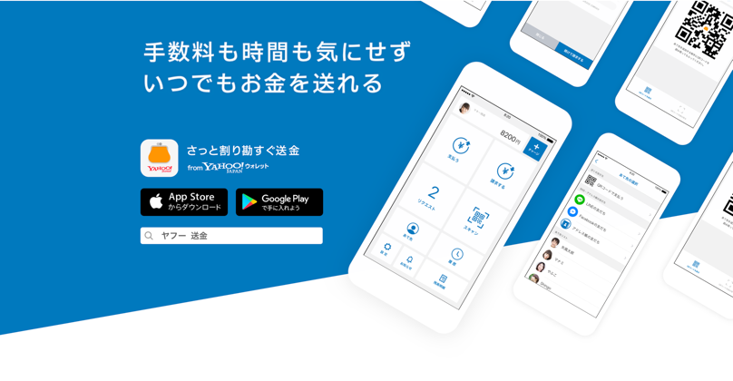

Yahoo!ウォレット/ Yahoo!マネー
2016

- 

- 概要
-
Yahoo!ウォレットはWEBページのデザイン刷新，同時に対面送金を可能とした「さっと割り勘すぐ送金！Yahoo!ウォレット」をリリース．開発，デザイン，仕様策定など全てが同時に進む案件．当時作成したデザインから現在に至るまでにいくつかの刷新，プロモーション用のLP作成など様々な制作物を世に出すことができた
- 作業内容
-
シニアデザイナーの指導を元にアプリUIを作成．作業ツールにはsketchを用い，Android・iOS両端末のUIデザイン，アイコンやアプリ内で使用されたイラストを作成した．アプリのプロモーションLP作成時は，ページ内のアニメーション設計を行った．デザイン業務以外では社内の委託の方，派遣の方へのディレクションも実施．リリースに至るまでは約半年を要した．
- 学び
-
作業に追われ，当時はより効率よく運用するフローなどを考えるところまで至らなかったことが多く，失敗が本当に多かった．自身の改善点が多く見えた時期だった．長期労働と度重なる仕様変更への忍耐力は確実に得られた．